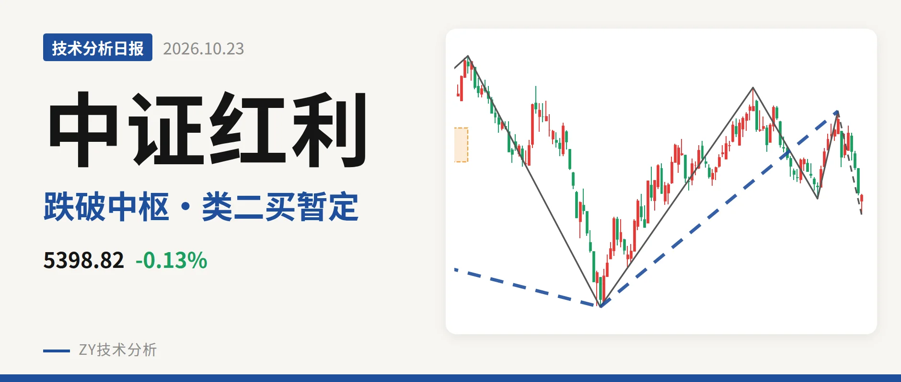
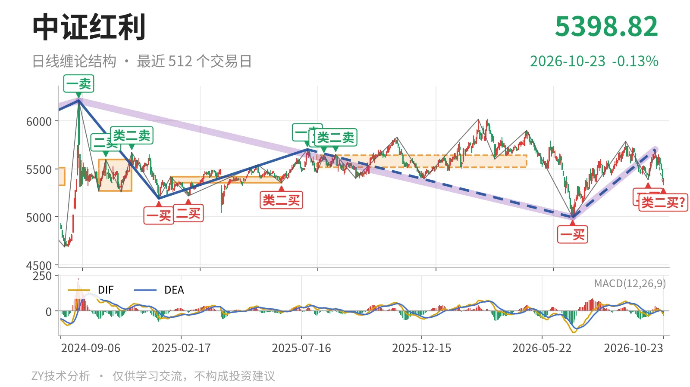
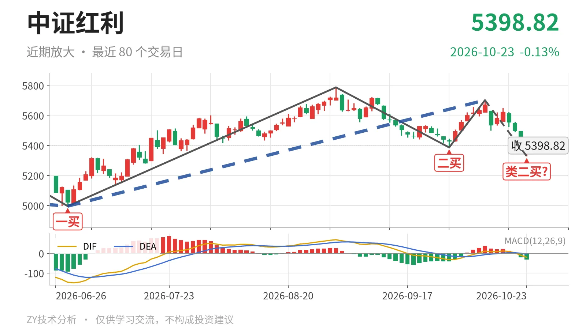

中证红利｜跌破日线中枢，反抽看5518点

最近日线中枢 5518.46—5639.99点，收盘位于中枢之下
一句话：日线中枢下沿失守，10月14日回落暂现新低不新弱，类二买未定
🧭 走势结构：仍处6月30日上涨线段内，5702点压着
中证红利仍处于6月30日以来的日线级别上涨线段中，10月14日起进入笔回调。更大级别里，2024年10月8日至2026年6月30日的下跌段从6209.67点跌到4995.49点，跌19.6%，还在延续；6月30日至10月14日的上涨段从4995.49点走到5701.06点，涨14.1%，也还在延续。这波反弹最高点5701.06点，距离2025年7月23日一卖5702.03点只差0.97点，未能升破，说明仍受前下跌段压制。因此当前不是独立上涨段，而是更大下跌段中的反弹结构。

📐 中枢与位置：跌破最近日线中枢下沿
最新收盘5398.82点已经落到最近日线中枢下方。该中枢为2025年8月4日至2026年4月30日中枢，区间5518.46—5639.99点，中轴5579.23点，尚未完成；最新价低于下沿约2.2%。这个中枢中轴高于前一个2025年1月27日至2025年6月23日中枢中轴5385.16点，中枢是上移的；但当前收盘跌破下沿，进入向下离开的观察段。
🔁 买卖点：类二买暂定，买点一个比一个低
6月30日一买4995.49点和9月29日二买5386.04点都在已结束的笔上，属于日线笔级别买点；线段级别没有新增买卖点。10月23日最低5328.30点被列为类二买，但其所在的10月14日至10月23日下跌笔还在延续，只能按暂定类二买处理，不提前给稳定性判断。9月29日二买5386.04点已被10月14日以来的回落打穿，10月23日暂定类二买位置低于9月29日二买，买点一个比一个低，说明6月30日以来上涨线段内部的回落力度不轻。

📉 背驰：新低不新弱，但笔未结束
当前10月14日至10月23日下跌笔最低5328.30点，已经低于9月29日5386.04点，但绿柱面积只有53、DIF低点-20.4，远未超过9月1日至9月29日下跌笔的绿柱面积561、DIF低点-32.7。这是新低不新弱，暂现日线笔级别背驰条件。不过这笔下跌还没有结束，绿柱面积与DIF低点仍会变化；最新DIF -20.4、柱 -32.8，DIF仍在零轴之下，绿柱尚未收敛，背驰只能等笔结束后再定，不能提前当作转折。
⚖️ 关键位置观察：5518点能否回抽定结构
10月14日以来回落已经跌破最近日线中枢下沿5518.46点。若后续反抽不能重新回到5518点上方，结构上构成对该日线中枢的三卖；重新站上5518点，则这次下跌更可能只是中枢扩展，而不是向下离开段成立。下方暂定类二买5328.30点是当前回落笔的观察位，但该买点未随笔结束前没有稳定性。整体判断：弱在日线中枢下沿被跌破、买点一个比一个低；下跌笔的新低不新弱还未定，只按中枢下方反抽观察，不给强结构判断。
⚠️ 本文为基于公开行情数据的缠论技术结构记录，由程序自动计算并生成，仅供学习交流，不构成任何投资建议。市场有风险，投资需谨慎。